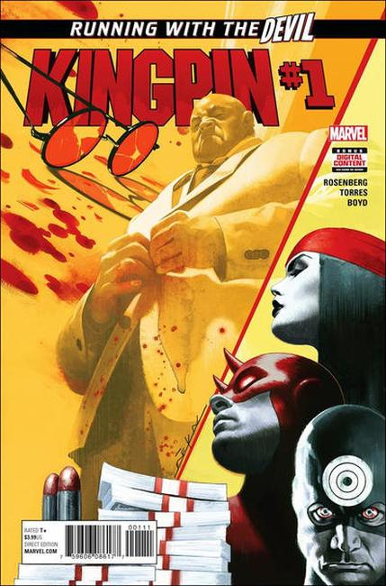

2003: Before he ran the mob as the Kingpin of New York, a shrewd and violent young Wilson Fisk built his empire the old fashioned way: one dead body at a time. Betrayal, gang-wars, and alliances are built and shattered in this first glimpse at the Kingpin's rise to power. See the first encounter of the Kingpin and Spider-Man!

2017: Written by Matthew Rosenberg. Art by Ben Torres. Cover by Jeff Dekal. WILSON FISK BUILDS A BRAND-NEW EMPIRE! The KINGPIN has done bad things. Deplorable things. He has cheated the law. He has blackmailed rivals. He has killed. But that's all in the past. The Kingpin is back in the city that he loves and ready to make his mark as a titan of legitimate industry, but needs to rekindle his public image.
When Wilson Fisk makes disgraced journalist SARAH DEWEY an offer she can't refuse, the spiraling saga of crime and betrayal begins anew. Don't miss the start of Kingpin's ongoing series, written by breakout writer MATTHEW ROSENBERG and illustrated in the heavy noir stylings of BEN TORRES, as Manhattan's criminal mastermind returns to the Big Apple with honorable intentions, but no one in his circle remains pure on his climb back to the top.